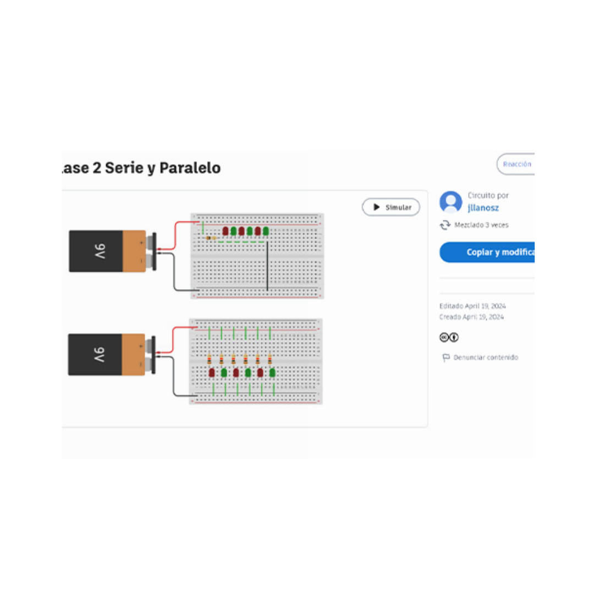
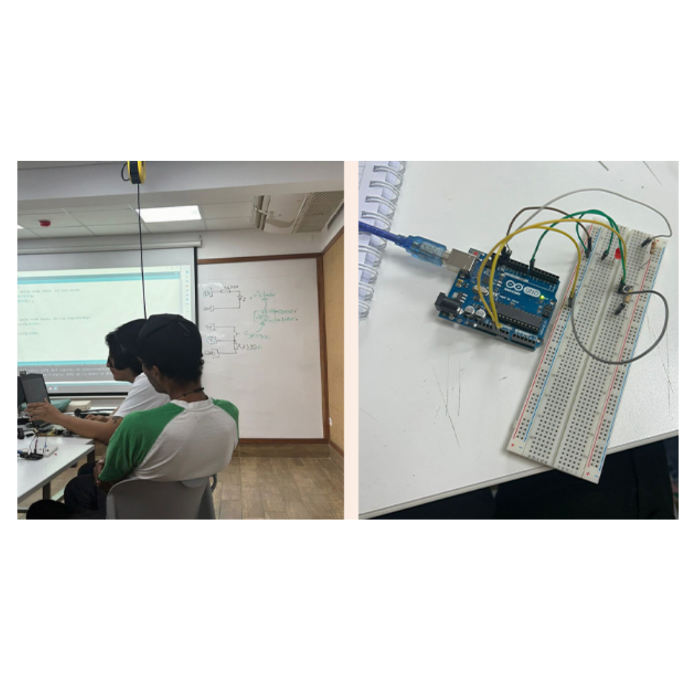
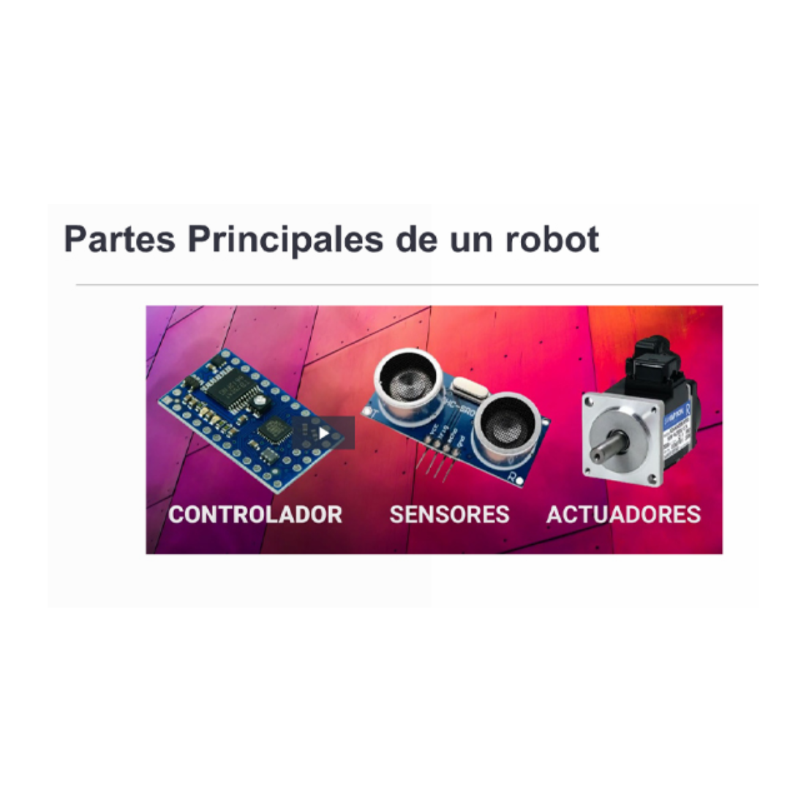
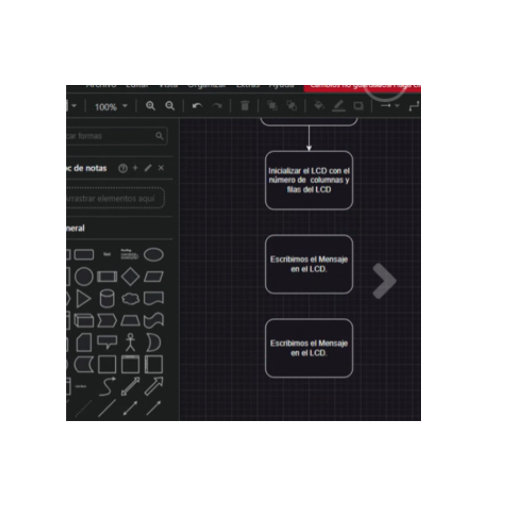

Marzo 18, 2024
BIENVENIDOS A
LABORATORIO 2
El curso que he diseñado te guiará en la creación de un plan de innovación que responda a los desafíos del emprendimiento
y la innovación empresarial, haciendo uso de diversas herramientas tecnológicas. Aprenderás a identificar oportunidades,
colaborar eficazmente y ejecutar estrategias innovadoras, con énfasis en la capacitación del equipo y la comunicación estratégica.
Gestionaremos nuestro progreso a lo largo del curso utilizando una bitácora digital donde registraremos nuestra experiencia en el laboratorio de innovación. Esta herramienta nos permitirá documentar nuestras reflexiones, aprendizajes y avances, facilitando la revisión y el seguimiento de nuestro desarrollo en la generación de soluciones innovadoras para los retos empresariales.

El 19 de Marzo empezarón mis clases de Laboratorio 2 en Toulouse Lautrec con el profesor Jorman Leiru Llanos.
Este primer día aprendí sobre HTML y diferentes tipos de etiquetas para poder formar en base a estructura mi primera pagina web.
Creamos
un archivo index.html , esta será nuestra página principal de inicio para nuestro sitio web.
Siempre se inicia con < !doctype html >

Colocar Ctrl+s para guardar lo modificado ,actualiza la página del template en el navegador para poder visualizar los cambios realizados en el código HTML.

Aprendaremos mas etiquetas , la Semántica y Sintáxis
Creamos
un archivo index.html , esta será nuestra página principal de inicio para nuestro sitio web ,Lista ordenadas < ul > y su cierre es < /ul > , Lista desordenadas < ol > y su cierre es < /ol > Agregar imagen < img src = "Demo .jpg"alt = "demo" > y tiene cierre Los vinculos "enlaces" < a href=" " > y su cierre es < /a >.
Siempre se inicia con < !doctype html >

< b > Esta etiqueta que resume la palabra BOLD hace que los caracteres
aparezcan marcados en negrita.
< br /> Esta etiqueta que resume la palabra BREAK realiza un salto de linea. Si
se quiere introducir una línea en medio de un párrafo se puede usar

CSS (Cascading Style Sheets / Hojas de estilo en cascada)
tampoco es un lenguaje de programación, sino que es
una tecnología que se emplea para darle estilo a una página
web construida en HTML.
Siempre se inicia con < !doctype html >

< style > Nos permite ingresar reglas desde el mismo documento HTML.
Usualmente se encuentra dentro del elemento < head >.
´

Realizamos la entrega del avance de la bitacora ,en el cual el profesores nos estaba ayudando con algunos codigos ,
tambien sampe debe cumplir cierta sintaxis para que haya sincronía
entre el documento HTML y CSS, de lo contrario, de
obviarse o existir errores, no se considerarán las
modificaciones hechas en CSS.

Hemos aprendido a utilizar estas herramientas de manera conjunta para llevar nuestra página web
desde el entorno de desarrollo hasta la web pública, permitiendo que cualquier persona pueda acceder a ella fácilmente a través de un enlace.

Valoramos profundamente la orientación proporcionada por el profesor durante nuestras reuniones semanales de avance. Sus conocimientos y experiencia han
sido fundamentales para recordarnos y fortalecer nuestra comprensión de algunos códigos importantes relacionados con nuestro proyecto.

La electrónica proporciona los fundamentos tecnológicos necesarios para la construcción y
operación de robots, mientras que Arduino, como una plataforma de electrónica de código abierto,
ofrece una manera accesible de aprender sobre electrónica y desarrollar proyectos robóticos y otros proyectos interactivos.

El profesor hizo un repaso del arduino y nos enseño mas con el tema ,con mis compañeras estuvimos
realizando los ejercicios que el profesor nos dejo en clase ,tambien al final presentamos todo los proyectos de nuestro grupo para ser cual era mas viable de todas .
abordamos conceptos fundamentales de electrónica básica, incluyendo definiciones, unidades fundamentales eléctricas y una variedad de conceptos. Aunque inicialmente encontré estos conceptos confusos, el profesor nos apoyo
mediante ejercicios en Tinkercad. Nos unimos a una sala con él y llevamos a cabo ejercicios que nos ayudaron a comprender mejor los conceptos.

En esta sesión, empezamos con una pequeña introducción sobre la resistencia y a como calcular su valor. Luego, el profesor nos enseñó el programa Arduino, explorando su interfaz y
algunos códigos. Para poner en práctica lo aprendido, construimos circuitos utilizando los materiales asignados en clase.

creamos una cuenta en Quizizz para resolver un pre test que abarcaba los temas
ya vistos. A pesar de algunos problemas, logré completarlo. Luego repasamos
conceptos fundamentales de la robótica y la electrónica. Como nuevo tema, vimos los componentes
electrónicos y finalmente, hicimos ejercicios en Tinkercad y en Arduino.

Tras una revisión de conceptos, el profesor nos introdujo a nuevos códigos que aplicamos en ejercicios prácticos utilizando Arduino en clase. Aunque la dificultad aumentó gradualmente, encontré la resolución fácil y
logramos puntos extras. Finalmente, discutimos los materiales necesarios para adquirir con el fin de realizar nuestro proyecto.
Concluimos nuestra clase con la elaboración de un diagrama de flujo, el cual nos permitió interpretar nuestros códigos de Arduino y comprenderlos mejor.
En la sesión de hoy, el enfoque principal fue en los conceptos de los bucles "for"
y "while". Posteriormente, trabajamos en grupos para practicar el parpadeo de LEDs
a través de ejercicios prácticos, aumentando la complejidad gradualmente. Además,
iniciamos el montaje de nuestro diagrama de conexiones y la planificación de nuestro proyecto.

Arrancamos con un ejercicio en Tinkercad, usando el programa Arduino para entender cómo funciona el protocolo ASCII
y las librerías, las cuales nos ayudan a conseguir códigos especiales y a simplificar algunos.
